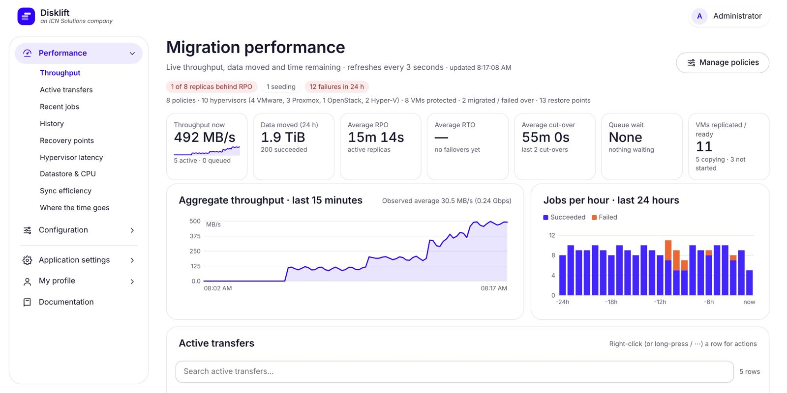
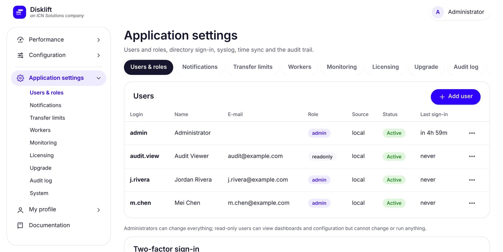

Move VMs between hypervisors, then keep them protected
Disklift copies running VMs from VMware, Hyper-V and OpenStack to Proxmox, agentless and block by block. The same appliance replicates them for disaster recovery, with restore points and test failover.

Works with the platforms you already run
Move between them or replicate within the same platform.
- VMware vSphere to Proxmox
- Hyper-V to Proxmox
- OpenStack to Proxmox
- VMware to VMware
- OpenStack to OpenStack
- Proxmox to Proxmox
- Hyper-V replication
What you get
One appliance for the move and for the protection that follows.
Agentless, block-level copy
Thin copy and changed-block tracking move only the data that changed. Optional compression and deduplication cut transfer time.
Continuous replication
Set an RPO target and keep point-in-time restore points for each VM.
Test and planned failover
Test failover, planned failover and failback, with the source up or down, and VLAN mapping for the target network.
Live visibility
Throughput, progress and ETA per VM, plus datastore latency and disk queue measurements while a job runs.
Built for careful admins
Encrypted credentials, pinned TLS and SSH host keys, two-factor sign-in, role-based access and a full audit trail.
Central logging and upgrades
Forward events to up to five syslog servers. Upgrades are signature-checked before anything is installed.
See it working
Screens from the current release.
Live transfer detail
Watch throughput, progress and bandwidth for every job as it runs.

Policies for moves and DR
Map sources to targets once and reuse the policy.

Admin settings
Users and roles, two-factor status and appliance settings in one place.

Try it on a test VM first
Download the appliance and run it in evaluation mode. A licence lifts the evaluation limits when you are ready.
Go to icnsolutions.net